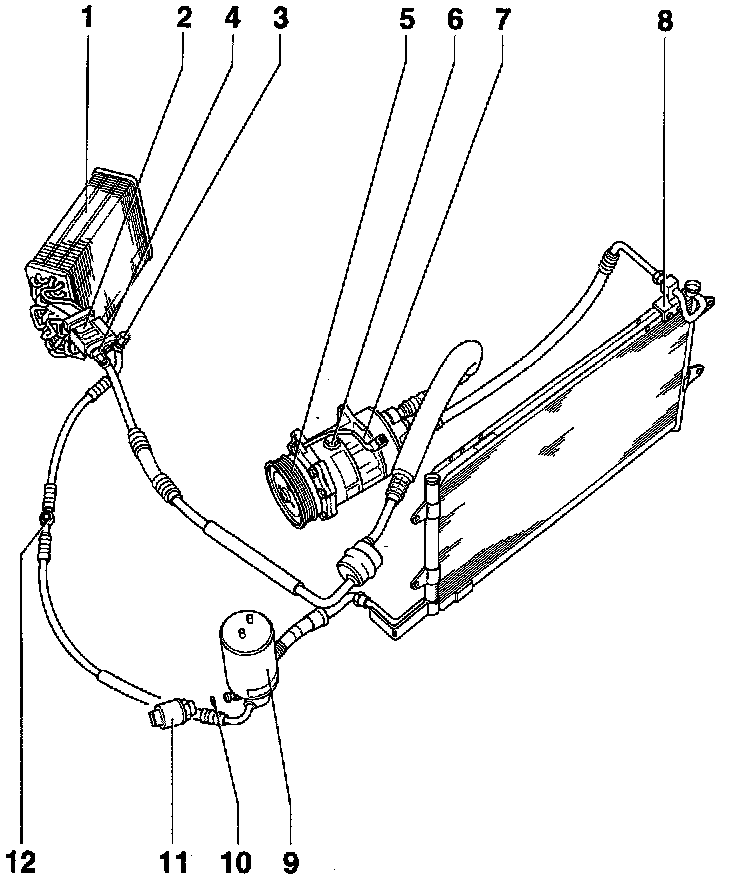

Refrigerant System Components
If the location of the component that you are looking for is not found in this section (Locations, Components), look under Diagrams, Exploded Views. Exploded Views
1 - Evaporator
2 - Expansion valve
- Located on right side of engine compartment
3 - High-pressure service valve
4 - Low.pressure service valve
5 - A/C clutch -N25-
6 - Oil filler plug/Drain plug
7 - Compressor
8 - Condenser
9 - Receiver drier
10 - O-ring
11 - A/C pressure switch -F129-
12 - Sight glass
- Not applicable to all vehicles.